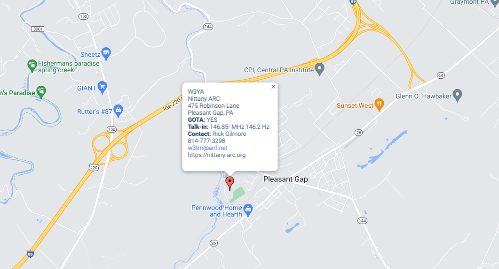
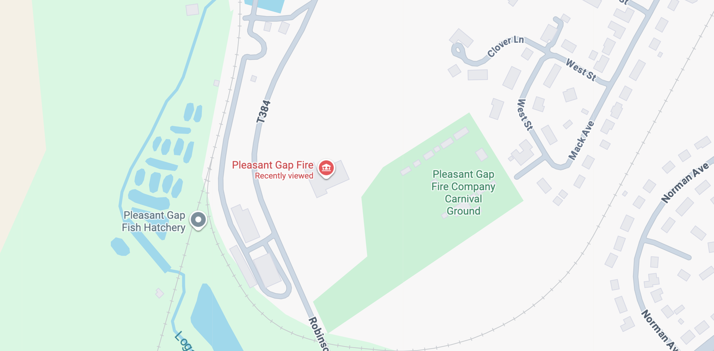
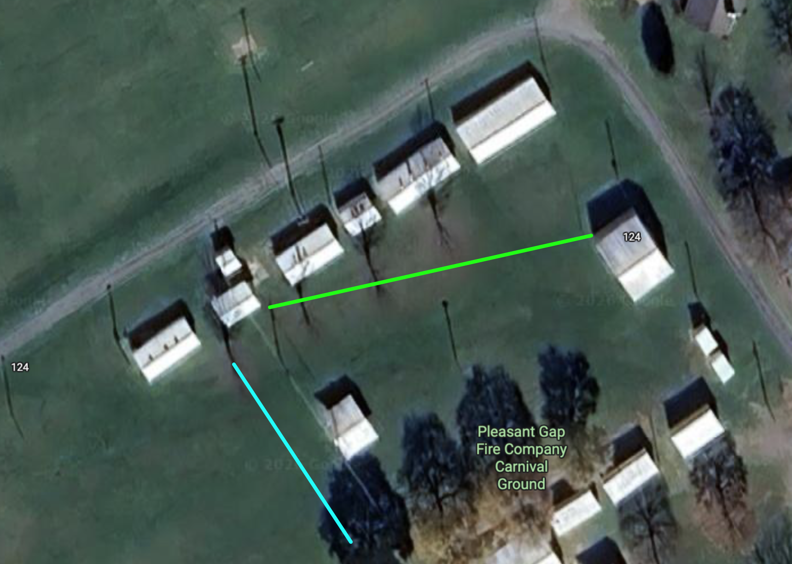

Field Day 2026
Report
Photos





Data


Bonus points
- Winlink message to ARRL Section Manager
- 10 Winlink messages
- Safety Officer
- Elected Official visit; agency official visit
- Social media
- Youth operator
- Web submission
- Info table
- Public location
- Educational activity


On time and under budget
- Membership approved budget up to $1,000
- Expenses ~$700; several in-kind donations/contributions (K3CWP, K3JEG, W3TM, KD3AQC)
It takes a village…
A huge thank you to
Next year
- Winter Field Day, January 23-24, 2027
- ARRL Field Day, June 26-27, 2027.